🌺
Nuestra visión
Un Puerto Rico moderno, próspero, seguro y con instituciones eficientes al servicio de la ciudadanía.
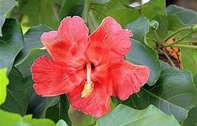
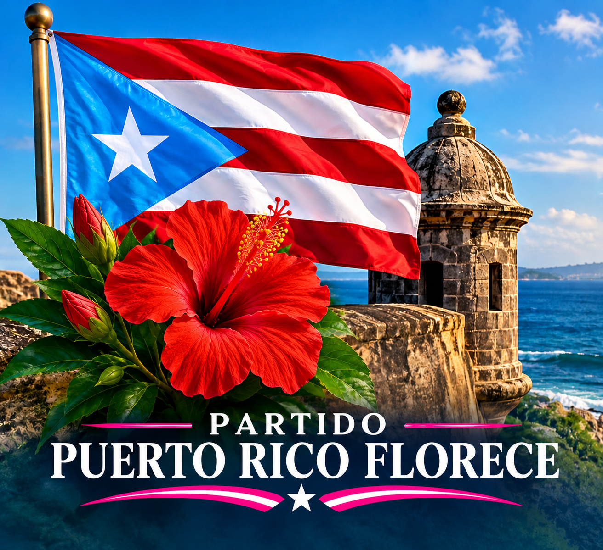
Un Puerto Rico que florece con esperanza, trabajo, justicia, transparencia y oportunidades para todos.
 .pr .flag .triangle{position:absolute;left:0;top:0;border-top:60px solid transparent;border-bottom:60px solid transparent;border-left:86px solid #75bde7;z-index:2}
.pr .flag .triangle{position:absolute;left:0;top:0;border-top:60px solid transparent;border-bottom:60px solid transparent;border-left:86px solid #75bde7;z-index:2}
Una propuesta política e institucional centrada en el servicio al pueblo, la transparencia, las oportunidades y el fortalecimiento de Puerto Rico.
Un Puerto Rico moderno, próspero, seguro y con instituciones eficientes al servicio de la ciudadanía.
Trabajar por una transformación responsable de Puerto Rico, fortaleciendo sus comunidades e instituciones.
El futuro de Puerto Rico se construye con la participación activa de su gente.
Conoce las áreas que formarán parte del portal oficial y de la plataforma programática.
Propuesta de Reforma Constitucional para la transformación de la Asamblea Legislativa de Puerto Rico en una Legislatura Unicameral, mediante un proceso constitucional, democrático y participativo.
Ver propuesta →Espacio oficial para consultar la Constitución del Partido, reglamentos, propuestas de gobierno, estudios jurídicos, documentos institucionales y publicaciones del Partido Puerto Rico Florece.
Ver documentos →Portal dedicado a los 78 municipios de Puerto Rico, con información sobre proyectos, necesidades, prioridades, desarrollo económico, infraestructura y participación ciudadana de cada comunidad.
Explorar los 78 municipios →Seleccione un municipio para conocer sus proyectos, necesidades, prioridades y oportunidades de desarrollo.
Seleccione un municipio para conocer sus proyectos, necesidades, prioridades y oportunidades de desarrollo.
Estructura oficial del Partido Puerto Rico Florece, incluyendo su dirección nacional, comités, organización territorial, responsabilidades y mecanismos de participación de sus miembros.
Conocer →Espacio oficial para comunicados, noticias, actividades, anuncios, eventos y novedades del Partido Puerto Rico Florece.
Ver noticias →Calendario oficial de reuniones, actividades, eventos, asambleas y encuentros del Partido Puerto Rico Florece en los 78 municipios de Puerto Rico.
Participar →Un gobierno al servicio del pueblo, con instituciones fuertes, transparentes y eficientes, que impulse el desarrollo económico, la educación, la salud, la seguridad y la justicia.
Reforma Nacional de Seguridad Alimentaria para Puerto Rico.
📄 Abrir Reforma de Seguridad Alimentaria →Reforma Nacional de Revisión, Derogación y Armonización de Leyes para un Gobierno Transparente de Puerto Rico.
📄 Abrir Reforma Nacional →Centro documental oficial del Partido Puerto Rico Florece para consultar propuestas, reglamentos, estudios, publicaciones y documentos institucionales.
Documentos relacionados con la Constitución del Partido, propuestas de reforma constitucional y proyectos institucionales.
Consultar →Documento dedicado al Plan de Seguridad Nacional del Partido Puerto Rico Florece.
📄 Abrir Plan de Seguridad Nacional →Propuesta de Reforma Administrativa del sistema de salud para Puerto Rico.
📄 Abrir Reforma Administrativa de Salud →Reforma Nacional de Revisión, Derogación y Armonización de Leyes para un Gobierno Transparente de Puerto Rico.
📄 Abrir Reforma Nacional de Leyes →Reforma Nacional de Investigación, Educación, Extensión y Formación del Talento Agroalimentario.
📄 Abrir Reforma Agroalimentaria →Modelo de Reforma Ambiental, Cambio Climático, Recursos Naturales y Sostenibilidad del Gobierno Reformado.
📄 Abrir Reforma Ambiental →Ley Modelo Nacional de Profesionalización, Formación Continua y Retribución Docente para Puerto Rico.
📄 Abrir Ley MNPFC-RD →Reglamentos internos, normas organizativas, procedimientos y documentos oficiales del Partido Puerto Rico Florece.
Consultar →Propuestas de gobierno, planes de trabajo, proyectos de desarrollo y documentos programáticos.
Consultar →Documento correspondiente al Plan de Gobierno Presidencial del Partido Puerto Rico Florece.
📄 Abrir Plan de Gobierno Presidencial →Documento relacionado con la reforma y corrección de las instituciones juveniles de Puerto Rico.
📄 Abrir documento PDF →Documento dedicado a la visión de futuro, la proyección internacional y la propuesta de Puerto Rico del mañana.
📄 Abrir documento PDF →Documento dedicado a la política social, la cultura, los deportes, el turismo, el medio ambiente y la calidad de vida del pueblo.
📄 Abrir documento PDF →Documento dedicado a las metas del Plan Nacional de Gobierno, la evaluación de resultados y la administración por objetivos.
📄 Abrir Plan Nacional de Gobierno →Documento correspondiente al Plan Estratégico Nacional 1 del Partido Puerto Rico Florece.
📄 Abrir Plan Estratégico Nacional 1 →Manuales institucionales, publicaciones, estudios y materiales preparados para consulta pública.
Consultar → 📘 Abrir Manual Oficial de Identidad y Símbolos →Colección documental correspondiente a la Edición Maestra del Fundador y Legado Nacional, organizada en los Volúmenes 1 al 5.
📄 Abrir Volúmenes 1 al 5 →Documento destinado a presentar principios de ética pública, disciplina institucional y responsabilidad de liderazgo.
📄 Abrir Manual del Funcionario Público →Documento destinado a establecer principios, normas y procedimientos para la comunicación institucional del Partido Puerto Rico Florece.
📄 Abrir Manual de Comunicación Institucional →Nueva edición del Manual de Comunicación Institucional del Partido Puerto Rico Florece.
📄 Abrir Nueva Edición →Documento dedicado a la comunicación institucional y a la participación ciudadana dentro del Partido Puerto Rico Florece.
📄 Abrir Manual de Comunicación y Participación Ciudadana →Colección documental correspondiente a la Edición Electoral y de Campaña, organizada en los Volúmenes I al X.
📄 Abrir Volúmenes I al X →Estudios jurídicos, análisis, informes y documentos de referencia relacionados con el desarrollo institucional.
Consultar →Documento dedicado al Plan Nacional de Infraestructura y a las iniciativas de desarrollo y modernización de la infraestructura.
📄 Abrir Plan Nacional de Infraestructura →Comunicaciones, documentos oficiales y materiales institucionales del Partido Puerto Rico Florece.
Consultar →Documento relacionado con propuestas de reforma para la Policía y los Bomberos de Puerto Rico.
📄 Abrir Reforma Policía y Bomberos →Material de audio del Partido Puerto Rico Florece para consulta y reproducción dentro de la Biblioteca Digital.
Material de audio para reproducción dentro de la Biblioteca Digital del Partido Puerto Rico Florece.
Material audiovisual para consulta dentro de la Biblioteca Digital.
Espacio destinado a manuales institucionales, publicaciones, estudios y materiales preparados para consulta pública.
Documento destinado a presentar la estructura organizativa, funciones, responsabilidades y procedimientos institucionales.
Documento próximamente disponibleSegunda parte del Manual Organizacional Institucional del Partido Puerto Rico Florece.
📄 Abrir Manual Organizacional — Parte II →Documento institucional que presenta el compromiso presidencial con el pueblo y el Plan de Gobierno Presidencial.
📄 Abrir documento PDF →Espacio destinado a estudios jurídicos, análisis, informes y documentos de referencia relacionados con el desarrollo institucional.
Espacio destinado a estudios, análisis e informes para consulta dentro de la Biblioteca Digital.
Documento próximamente disponibleEspacio destinado a comunicaciones, documentos oficiales y materiales institucionales del Partido Puerto Rico Florece.
Espacio destinado a documentos institucionales y materiales oficiales para consulta dentro de la Biblioteca Digital.
Documento próximamente disponibleEspacio destinado a los documentos relacionados con la Constitución del Partido Puerto Rico Florece y los proyectos de reforma constitucional.
Documento institucional para consulta dentro de la Biblioteca Digital.
📄 Abrir documento PDF →Documento institucional que presenta la Constitución Organizacional del Partido Puerto Rico Florece.
📄 Abrir Constitución Organizacional →Documento constitucional de Puerto Rico para consulta dentro de la Biblioteca Digital.
📄 Abrir Constitución de Puerto Rico →Documento adicional de la Constitución de Puerto Rico para consulta dentro de la Biblioteca Digital.
📄 Abrir Constitución de Puerto Rico 1 →Colección documental correspondiente a la Edición Constitucional y Jurídica, organizada en los Volúmenes I al X.
📄 Abrir Volúmenes I al X →Espacio destinado a los reglamentos internos, normas organizativas, procedimientos y documentos oficiales del Partido Puerto Rico Florece.
Documento destinado a establecer las normas y procedimientos internos del Partido Puerto Rico Florece.
📄 Abrir Reglamento y Normas →Únete al Partido Puerto Rico Florece y participa en la construcción de un Puerto Rico con esperanza, trabajo, justicia, transparencia y oportunidades para todos.
Quiero participarEsta sección está preparada para incorporar el correo electrónico oficial, teléfono, redes sociales y formulario de contacto.
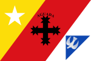
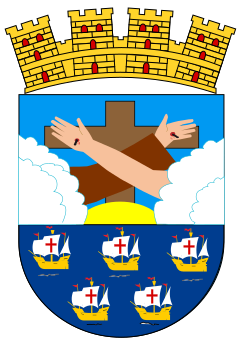
Impulsar el turismo costero, los pequeños negocios, la economía local y nuevas oportunidades para emprendedores y comerciantes.
Priorizar la modernización de carreteras, caminos municipales, infraestructura comunitaria, drenaje, agua, energía y conectividad digital.
Promover oportunidades educativas, capacitación técnica, formación profesional y programas de desarrollo para la juventud.
Fortalecer el acceso a servicios de salud, prevención, bienestar comunitario y programas dirigidos a las personas mayores.
Proteger las costas, recursos naturales y espacios comunitarios, promoviendo un desarrollo responsable y sostenible.
Promover vivienda digna, comunidades seguras y proyectos que mejoren la calidad de vida de las familias aguadeñas.
Fortalecer la participación de las comunidades en la identificación de necesidades y prioridades municipales.
Construir una Aguada con más oportunidades, desarrollo económico, infraestructura moderna, servicios públicos eficientes y participación ciudadana.
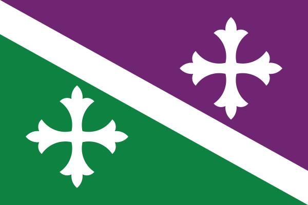
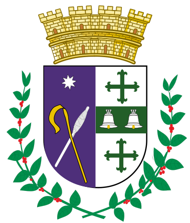
Fortalecer la agricultura, la producción de café, los pequeños negocios, el empleo local y nuevas oportunidades de desarrollo económico.
Priorizar el mantenimiento y modernización de carreteras, caminos municipales, infraestructura comunitaria, agua, energía y conectividad digital.
Impulsar oportunidades educativas, capacitación técnica, desarrollo profesional y programas dirigidos a la juventud.
Promover el acceso a servicios de salud, prevención, bienestar comunitario y atención a las personas mayores.
Fomentar la conservación de los recursos naturales, el turismo de naturaleza y el aprovechamiento responsable de las áreas montañosas y lagos.
Promover comunidades seguras, vivienda digna y programas dirigidos a mejorar la calidad de vida de las familias.
Promover la participación de las comunidades en la identificación de necesidades y prioridades municipales.
Construir un Adjuntas con más oportunidades, infraestructura moderna, desarrollo económico, servicios públicos eficientes y participación ciudadana.
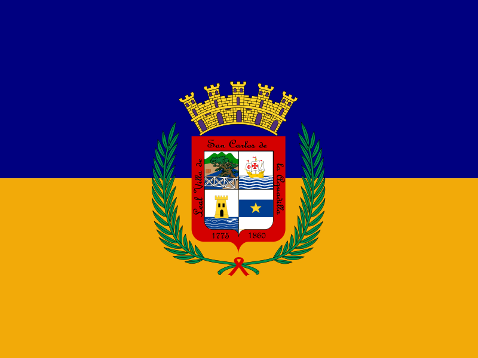
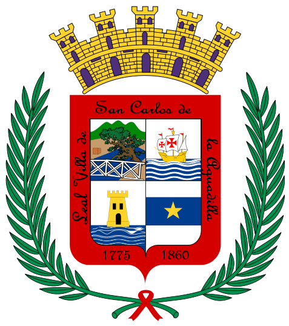
Impulsar el desarrollo económico, el comercio local, el turismo, la industria y nuevas oportunidades de empleo para las familias de Aguadilla.
Priorizar el mantenimiento de carreteras, caminos, espacios públicos, infraestructura municipal, agua, energía y conectividad digital.
Promover capacitación técnica, educación profesional, oportunidades para la juventud y alianzas con instituciones educativas.
Fortalecer el acceso a servicios de salud, prevención, bienestar comunitario y programas de apoyo para las personas mayores.
Fomentar el turismo costero y de naturaleza, proteger los recursos naturales y promover el desarrollo responsable de las zonas costeras.
Promover vivienda digna, comunidades seguras y programas que mejoren la calidad de vida de las familias aguadillanas.
Fortalecer la participación de las comunidades en la identificación de necesidades y prioridades para el desarrollo municipal.
Construir un Aguadilla con mayores oportunidades económicas, infraestructura moderna, servicios públicos eficientes, protección ambiental y participación ciudadana.
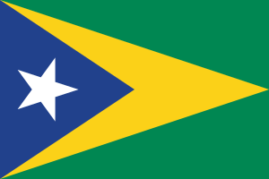

Impulsar el comercio local, el desarrollo de pequeñas empresas, la agricultura y nuevas oportunidades de empleo para las familias de Aguas Buenas.
Priorizar el mantenimiento de carreteras, caminos municipales, espacios públicos, sistemas de agua, energía y conectividad digital.
Promover capacitación técnica, educación profesional, actividades para la juventud y alianzas con instituciones educativas.
Fortalecer el acceso a servicios de salud, prevención, bienestar comunitario y programas de apoyo para las personas mayores.
Promover el turismo de naturaleza, proteger los recursos naturales y desarrollar iniciativas ambientales que beneficien a las comunidades.
Promover vivienda digna, comunidades seguras y programas dirigidos a mejorar la calidad de vida de las familias aguasbonenses.
Fortalecer la participación de las comunidades en la identificación de necesidades y prioridades para el desarrollo municipal.
Construir un Aguas Buenas con mayores oportunidades económicas, infraestructura adecuada, servicios públicos eficientes, protección ambiental y participación ciudadana.
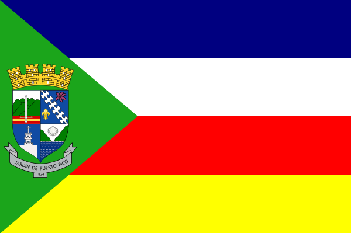

Impulsar el comercio local, la agricultura, las pequeñas empresas y nuevas oportunidades de empleo para las familias de Aibonito.
Priorizar el mantenimiento de carreteras, caminos municipales, espacios públicos, agua, energía y conectividad digital.
Promover capacitación técnica, educación profesional, actividades para la juventud y alianzas con instituciones educativas.
Fortalecer el acceso a servicios de salud, prevención, bienestar comunitario y programas de apoyo para las personas mayores.
Promover el turismo de naturaleza y montaña, proteger los recursos naturales y desarrollar iniciativas ambientales responsables.
Promover vivienda digna, comunidades seguras y programas que mejoren la calidad de vida de las familias aiboniteñas.
Fortalecer la participación de las comunidades en la identificación de necesidades y prioridades para el desarrollo municipal.
Construir un Aibonito con mayores oportunidades económicas, infraestructura adecuada, servicios públicos eficientes, protección ambiental y participación ciudadana.
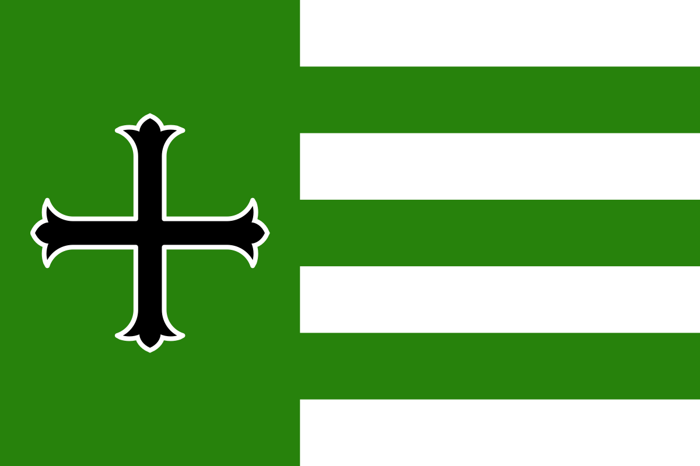

Impulsar el comercio local, la agricultura, la industria, el turismo y nuevas oportunidades de empleo para las familias de Añasco.
Priorizar el mantenimiento de carreteras, caminos municipales, espacios públicos, agua, energía y conectividad digital.
Promover capacitación técnica, educación profesional, actividades para la juventud y alianzas con instituciones educativas.
Fortalecer el acceso a servicios de salud, prevención, bienestar comunitario y programas de apoyo para las personas mayores.
Promover el turismo costero y de naturaleza, proteger los recursos naturales y fomentar el desarrollo responsable de las zonas costeras.
Promover vivienda digna, comunidades seguras y programas que mejoren la calidad de vida de las familias añasqueñas.
Fortalecer la participación de las comunidades en la identificación de necesidades y prioridades para el desarrollo municipal.
Construir un Añasco con mayores oportunidades económicas, infraestructura adecuada, servicios públicos eficientes, protección ambiental y participación ciudadana.
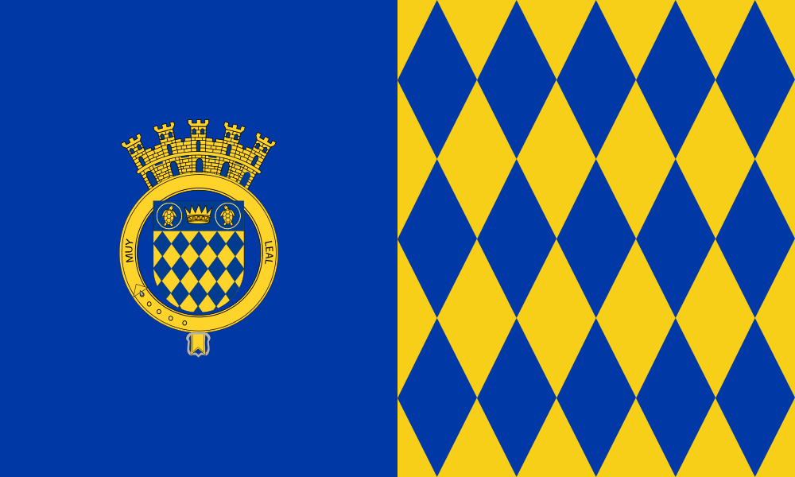
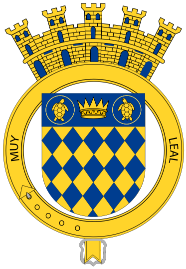
Impulsar el comercio local, la agricultura, la industria, el turismo y nuevas oportunidades de empleo para las familias de Arecibo.
Priorizar el mantenimiento de carreteras, caminos municipales, espacios públicos, agua, energía y conectividad digital.
Promover capacitación técnica, educación profesional, actividades para la juventud y alianzas con instituciones educativas.
Fortalecer el acceso a servicios de salud, prevención, bienestar comunitario y programas de apoyo para las personas mayores.
Promover el turismo costero y de naturaleza, proteger los recursos naturales y fomentar el desarrollo responsable de las zonas costeras.
Promover vivienda digna, comunidades seguras y programas que mejoren la calidad de vida de las familias arecibeñas.
Fortalecer la participación de las comunidades en la identificación de necesidades y prioridades para el desarrollo municipal.
Construir un Arecibo con mayores oportunidades económicas, infraestructura adecuada, servicios públicos eficientes, protección ambiental y participación ciudadana.


Impulsar el comercio local, la agricultura, la pesca, el turismo y nuevas oportunidades de empleo para las familias de Arroyo.
Priorizar el mantenimiento de carreteras, caminos municipales, espacios públicos, agua, energía y conectividad digital.
Promover capacitación técnica, educación profesional, actividades para la juventud y alianzas con instituciones educativas.
Fortalecer el acceso a servicios de salud, prevención, bienestar comunitario y programas de apoyo para las personas mayores.
Promover el turismo costero, proteger los recursos naturales y fomentar iniciativas ambientales responsables.
Promover vivienda digna, comunidades seguras y programas que mejoren la calidad de vida de las familias arroyanas.
Fortalecer la participación de las comunidades en la identificación de necesidades y prioridades para el desarrollo municipal.
Construir un Arroyo con mayores oportunidades económicas, infraestructura adecuada, servicios públicos eficientes, protección ambiental y participación ciudadana.
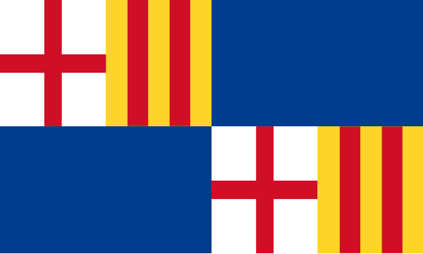
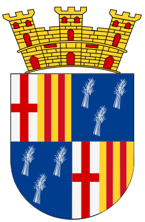
Impulsar el comercio local, la agricultura, la industria, el turismo y nuevas oportunidades de empleo para las familias de Barceloneta.
Priorizar el mantenimiento de carreteras, caminos municipales, espacios públicos, agua, energía y conectividad digital.
Promover capacitación técnica, educación profesional, actividades para la juventud y alianzas con instituciones educativas.
Fortalecer el acceso a servicios de salud, prevención, bienestar comunitario y programas de apoyo para las personas mayores.
Promover el turismo costero y de naturaleza, proteger los recursos naturales y fomentar el desarrollo responsable de las zonas costeras.
Promover vivienda digna, comunidades seguras y programas que mejoren la calidad de vida de las familias barcelonetenses.
Fortalecer la participación de las comunidades en la identificación de necesidades y prioridades para el desarrollo municipal.
Construir una Barceloneta con mayores oportunidades económicas, infraestructura adecuada, servicios públicos eficientes, protección ambiental y participación ciudadana.
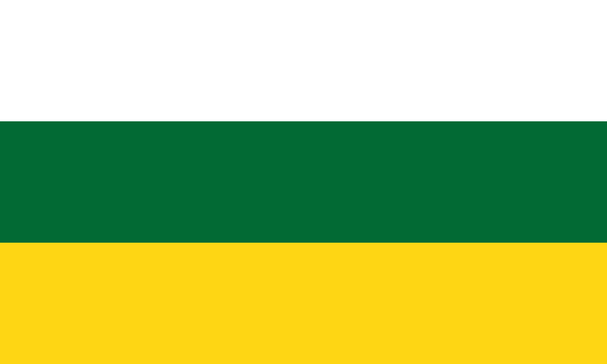
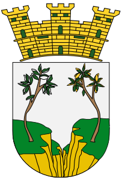
Impulsar el comercio local, la agricultura, las pequeñas empresas, el turismo y nuevas oportunidades de empleo para las familias de Barranquitas.
Priorizar el mantenimiento de carreteras, caminos municipales, espacios públicos, agua, energía y conectividad digital.
Promover capacitación técnica, educación profesional, actividades para la juventud y alianzas con instituciones educativas.
Fortalecer el acceso a servicios de salud, prevención, bienestar comunitario y programas de apoyo para las personas mayores.
Promover el turismo de montaña y naturaleza, proteger los recursos naturales y fomentar iniciativas ambientales responsables.
Promover vivienda digna, comunidades seguras y programas que mejoren la calidad de vida de las familias barranquiteñas.
Fortalecer la participación de las comunidades en la identificación de necesidades y prioridades para el desarrollo municipal.
Construir un Barranquitas con mayores oportunidades económicas, infraestructura adecuada, servicios públicos eficientes, protección ambiental y participación ciudadana.
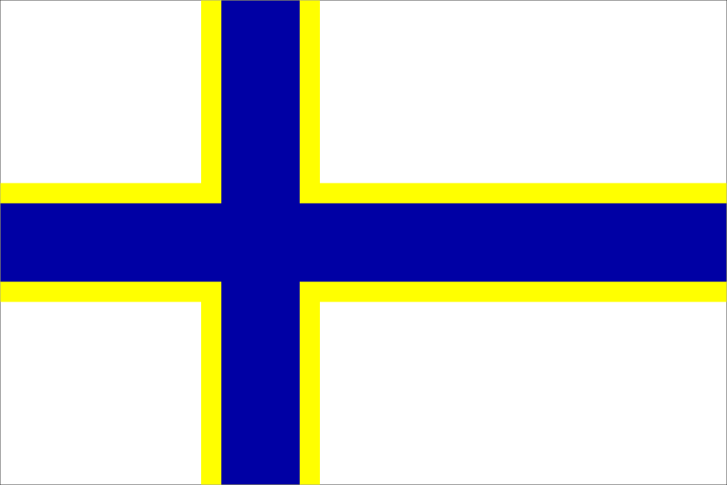
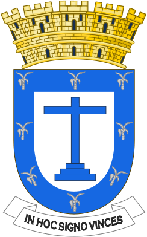
Impulsar el comercio local, las pequeñas empresas, la industria, la innovación y nuevas oportunidades de empleo para las familias de Bayamón.
Priorizar el mantenimiento de carreteras, vías municipales, espacios públicos, agua, energía, transporte y conectividad digital.
Promover capacitación técnica, educación profesional, oportunidades para la juventud y alianzas con instituciones educativas.
Fortalecer el acceso a servicios de salud, prevención, bienestar comunitario y programas de apoyo para las personas mayores.
Promover espacios recreativos, proteger las áreas naturales y fomentar iniciativas ambientales y de desarrollo urbano responsable.
Promover vivienda digna, comunidades seguras y programas que mejoren la calidad de vida de las familias bayamonesas.
Fortalecer la participación de las comunidades en la identificación de necesidades y prioridades para el desarrollo municipal.
Construir un Bayamón con mayores oportunidades económicas, infraestructura moderna, servicios públicos eficientes, protección ambiental y participación ciudadana.
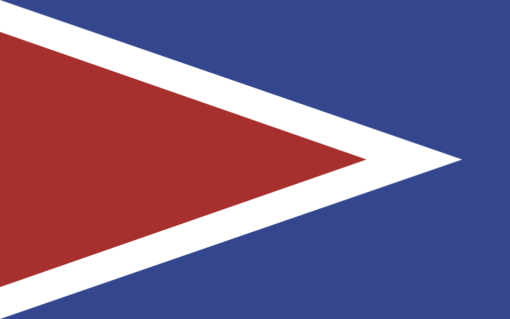
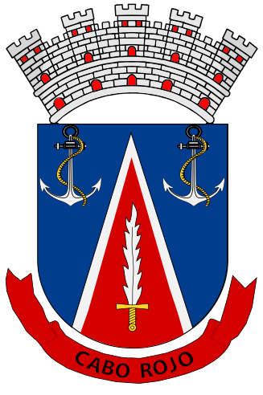
Impulsar el comercio local, la agricultura, la pesca, el turismo y nuevas oportunidades de empleo para las familias de Cabo Rojo.
Priorizar el mantenimiento de carreteras, caminos municipales, espacios públicos, agua, energía y conectividad digital.
Promover capacitación técnica, educación profesional, actividades para la juventud y alianzas con instituciones educativas.
Fortalecer el acceso a servicios de salud, prevención, bienestar comunitario y programas de apoyo para las personas mayores.
Promover el turismo costero y de naturaleza, proteger las áreas naturales y fomentar un desarrollo responsable de las zonas costeras.
Promover vivienda digna, comunidades seguras y programas que mejoren la calidad de vida de las familias caborrojeñas.
Fortalecer la participación de las comunidades en la identificación de necesidades y prioridades para el desarrollo municipal.
Construir un Cabo Rojo con mayores oportunidades económicas, infraestructura adecuada, servicios públicos eficientes, protección ambiental y participación ciudadana.
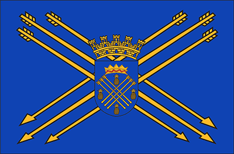
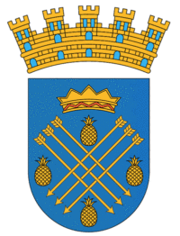
Caguas es uno de los principales municipios del interior de Puerto Rico y constituye un importante centro urbano, comercial, educativo y cultural.
Fortalecer la administración municipal mediante transparencia, eficiencia en los servicios públicos, participación ciudadana y planificación responsable.
Impulsar el desarrollo de pequeños y medianos negocios, promover la creación de empleos y apoyar nuevas iniciativas empresariales y comerciales.
Promover servicios de salud accesibles, programas de prevención y apoyo a las comunidades, personas mayores y familias.
Apoyar iniciativas educativas, capacitación laboral, tecnología y oportunidades para estudiantes y jóvenes.
Priorizar el mantenimiento de carreteras, espacios públicos, infraestructura municipal y servicios esenciales.
Promover la protección de los recursos naturales, áreas verdes, manejo responsable de desperdicios y proyectos de sostenibilidad.
Fomentar la participación de los residentes de Caguas en los procesos de planificación y desarrollo de sus comunidades.
El objetivo es desarrollar propuestas municipales que respondan a las necesidades de Caguas y contribuyan al desarrollo integral de Puerto Rico.
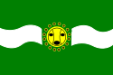
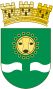
Camuy es un municipio del norte de Puerto Rico reconocido por su riqueza natural, cultural e histórica y por el carácter de sus comunidades.
Promover una administración municipal transparente, eficiente y cercana a los ciudadanos, fortaleciendo la participación comunitaria.
Apoyar a los comerciantes, pequeños y medianos negocios, agricultores y emprendedores, fomentando nuevas oportunidades económicas y empleos.
Impulsar el turismo responsable y la protección de los recursos naturales de Camuy, promoviendo sus atractivos como parte del desarrollo económico municipal.
Promover programas de prevención, bienestar comunitario y servicios dirigidos a las familias, personas mayores y poblaciones vulnerables.
Apoyar iniciativas educativas, capacitación tecnológica, desarrollo de destrezas laborales y oportunidades para los jóvenes.
Priorizar el mantenimiento de carreteras, caminos municipales, espacios públicos y servicios esenciales para las comunidades.
Fomentar la conservación ambiental, el manejo responsable de desperdicios, la protección de áreas naturales y proyectos de sostenibilidad.
Fortalecer los mecanismos de participación de los residentes de Camuy en la identificación de necesidades y en la planificación del desarrollo municipal.
Desarrollar propuestas municipales orientadas al bienestar de las comunidades de Camuy y a su integración en una visión de desarrollo sostenible para Puerto Rico.
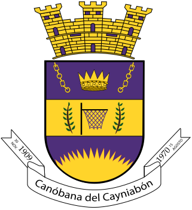
Canóvanas es un municipio de la región noreste de Puerto Rico, con comunidades diversas, actividad comercial y una ubicación estratégica para el desarrollo regional.
Promover una administración municipal transparente, eficiente y cercana a las comunidades, fortaleciendo la participación ciudadana.
Apoyar a pequeños y medianos comerciantes, emprendedores y empresas locales, fomentando la creación de empleos y nuevas oportunidades económicas.
Promover programas de prevención, bienestar comunitario y apoyo a las familias, personas mayores y poblaciones vulnerables.
Impulsar oportunidades educativas, capacitación tecnológica, formación laboral y programas dirigidos a los jóvenes.
Priorizar el mantenimiento de carreteras, caminos municipales, instalaciones públicas y servicios esenciales.
Promover la conservación de los recursos naturales, el manejo responsable de desperdicios y proyectos de sostenibilidad.
Crear espacios para que los residentes participen en la identificación de necesidades y en la planificación del desarrollo de sus comunidades.
Desarrollar propuestas municipales dirigidas al bienestar de las comunidades de Canóvanas y a su integración en una visión de desarrollo sostenible para Puerto Rico.
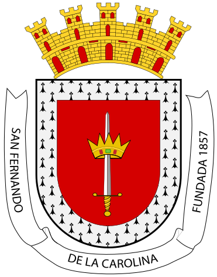
Carolina es un municipio de gran importancia económica, turística y urbana en Puerto Rico, con una ubicación estratégica en la zona metropolitana y una amplia diversidad de comunidades.
Promover una administración municipal transparente, eficiente y cercana a los ciudadanos, fortaleciendo la participación de las comunidades en los asuntos municipales.
Impulsar el comercio local, apoyar a pequeños y medianos negocios, fomentar el emprendimiento y promover oportunidades de empleo.
Fortalecer el potencial turístico y económico de Carolina, promoviendo sus recursos, espacios recreativos y actividades culturales como elementos del desarrollo municipal.
Promover programas de prevención, bienestar comunitario y apoyo a las familias, personas mayores y comunidades que necesiten servicios de asistencia.
Apoyar iniciativas educativas, capacitación tecnológica, formación laboral y programas que amplíen las oportunidades para los jóvenes.
Priorizar el mantenimiento de carreteras, instalaciones públicas, espacios comunitarios y servicios esenciales, promoviendo una movilidad urbana eficiente.
Fomentar la protección de los recursos naturales, la conservación de áreas verdes, el manejo responsable de desperdicios y proyectos de sostenibilidad.
Fortalecer los mecanismos de participación ciudadana para que los residentes puedan aportar ideas y participar en la planificación del futuro de sus comunidades.
Desarrollar propuestas municipales orientadas al bienestar de las comunidades de Carolina y a su integración dentro de una visión de desarrollo sostenible para Puerto Rico.
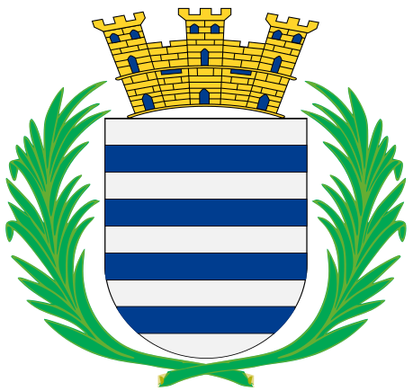
Cataño es un municipio de la zona metropolitana de Puerto Rico, reconocido por su ubicación frente a la bahía de San Juan y por la importancia de sus comunidades, actividad comercial y conexión con otros municipios del área metropolitana.
Promover una administración municipal transparente, eficiente y cercana a los ciudadanos, fortaleciendo la participación de las comunidades en las decisiones que afectan su municipio.
Apoyar a los pequeños y medianos comerciantes, emprendedores y empresas locales, promoviendo oportunidades de empleo y desarrollo económico.
Aprovechar responsablemente la ubicación costera de Cataño para promover actividades culturales, recreativas y turísticas, protegiendo al mismo tiempo sus recursos naturales.
Promover programas de prevención, bienestar comunitario y apoyo a las familias, personas mayores y poblaciones vulnerables.
Apoyar programas educativos, capacitación tecnológica, formación laboral y oportunidades de desarrollo para los jóvenes.
Priorizar el mantenimiento de carreteras, instalaciones públicas, espacios comunitarios y servicios esenciales, fortaleciendo la movilidad y conectividad municipal.
Fomentar la protección de la bahía, las áreas costeras y los recursos naturales, además del manejo responsable de desperdicios y proyectos de sostenibilidad.
Crear mecanismos para que los residentes participen activamente en la identificación de necesidades y en la planificación del desarrollo de sus comunidades.
Desarrollar propuestas municipales orientadas al bienestar de las comunidades de Cataño y a su integración dentro de una visión de desarrollo sostenible para Puerto Rico.
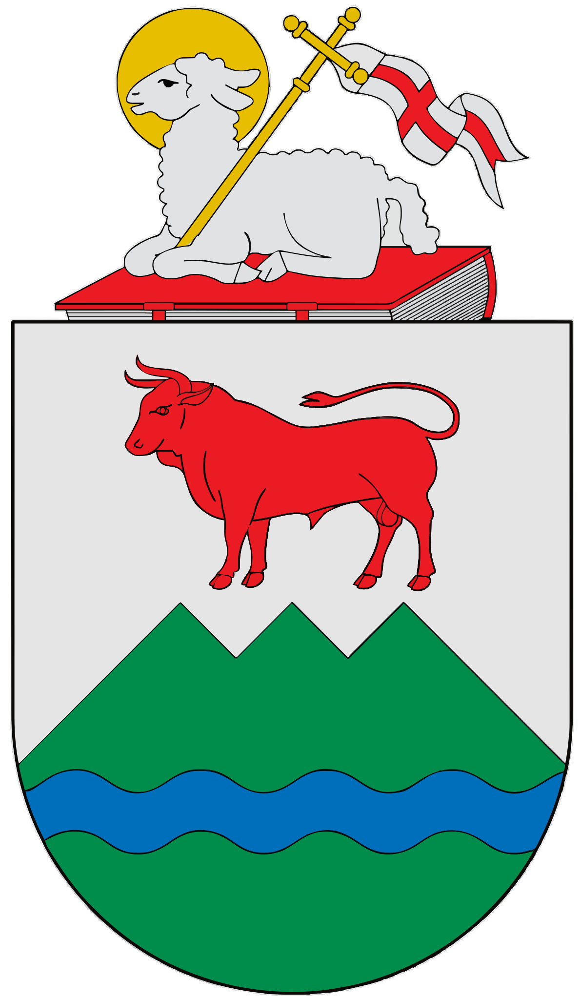
Cayey es un municipio de la región central de Puerto Rico, caracterizado por su entorno montañoso, sus comunidades y su importancia dentro de la zona central de la Isla.
Promover una administración municipal transparente, eficiente y cercana a los ciudadanos, fortaleciendo la participación de las comunidades.
Apoyar a comerciantes, pequeños y medianos negocios, emprendedores y proyectos que contribuyan a la creación de empleos y al crecimiento Económico local.
Promover responsablemente los atractivos naturales, paisajísticos y culturales de Cayey como parte de una estrategia de turismo y desarrollo económico sostenible.
Impulsar programas de prevención, bienestar comunitario y apoyo a las familias, personas mayores y poblaciones vulnerables.
Apoyar iniciativas educativas, capacitación tecnológica, formación laboral y oportunidades de desarrollo para los jóvenes.
Priorizar el mantenimiento de carreteras, caminos municipales, instalaciones públicas y servicios esenciales para las comunidades.
Fomentar la conservación de los recursos naturales, áreas verdes y ecosistemas, junto con el manejo responsable de desperdicios y proyectos de sostenibilidad.
Fortalecer los espacios de participación ciudadana para que los residentes puedan aportar ideas y colaborar en la planificación del desarrollo municipal.
Desarrollar propuestas municipales orientadas al bienestar de las comunidades de Cayey y a su integración dentro de una visión de desarrollo sostenible para Puerto Rico.
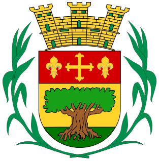
Ceiba es un municipio de la región este de Puerto Rico, reconocido por su entorno natural, sus áreas costeras y su importancia estratégica dentro de la región.
Promover una administración municipal transparente, eficiente y cercana a los ciudadanos, fortaleciendo la participación de las comunidades.
Apoyar a los pequeños y medianos comerciantes, emprendedores y empresas locales, fomentando oportunidades de empleo y desarrollo económico.
Impulsar un turismo responsable basado en los recursos naturales, costeros y recreativos de Ceiba, procurando su conservación y aprovechamiento sostenible.
Promover programas de prevención, bienestar comunitario y apoyo a las familias, personas mayores y poblaciones vulnerables.
Apoyar iniciativas educativas, capacitación tecnológica, formación laboral y oportunidades de desarrollo para los jóvenes.
Priorizar el mantenimiento de carreteras, instalaciones públicas, espacios comunitarios y servicios esenciales.
Fomentar la protección de los ecosistemas, áreas verdes y recursos costeros, junto con programas de conservación y sostenibilidad.
Fortalecer los espacios de participación ciudadana para que los residentes puedan aportar ideas y participar en la planificación del desarrollo municipal.
Desarrollar propuestas municipales orientadas al bienestar de las comunidades de Ceiba y a su integración dentro de una visión de desarrollo sostenible para Puerto Rico.
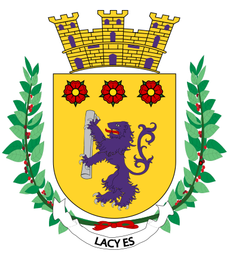
Ciales es un municipio de la región central de Puerto Rico, reconocido por su entorno montañoso, sus recursos naturales y el valor histórico y cultural de sus comunidades.
Promover una administración municipal transparente, eficiente y cercana a los ciudadanos, fortaleciendo la participación de las comunidades en los asuntos municipales.
Apoyar a comerciantes, agricultores, pequeños y medianos negocios y emprendedores, fomentando nuevas oportunidades económicas y empleos para los residentes.
Impulsar responsablemente el turismo de naturaleza y los atractivos culturales y paisajísticos de Ciales, procurando la conservación de sus recursos naturales.
Promover iniciativas que fortalezcan la agricultura, la producción local y las oportunidades para agricultores y productores del municipio.
Promover programas de prevención, bienestar comunitario y apoyo a las familias, personas mayores y poblaciones vulnerables.
Apoyar iniciativas educativas, capacitación tecnológica, formación laboral y oportunidades de desarrollo para los jóvenes.
Priorizar el mantenimiento de carreteras, caminos municipales, instalaciones públicas y servicios esenciales para las comunidades.
Fomentar la conservación de los recursos naturales, áreas verdes y ecosistemas, junto con el manejo responsable de desperdicios y proyectos de sostenibilidad.
Fortalecer los espacios de participación ciudadana para que los residentes puedan aportar ideas y participar en la planificación del desarrollo municipal.
Desarrollar propuestas municipales orientadas al bienestar de las comunidades de Ciales y a su integración dentro de una visión de desarrollo sostenible para Puerto Rico.
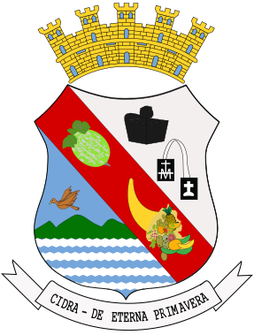
Cidra es un municipio de la región central de Puerto Rico, reconocido por sus paisajes, recursos naturales, comunidades y actividad agrícola.
Promover una administración municipal transparente, eficiente y cercana a los ciudadanos, fortaleciendo la participación de las comunidades.
Apoyar a comerciantes, pequeños y medianos negocios, agricultores y emprendedores, fomentando oportunidades de empleo y desarrollo económico local.
Impulsar iniciativas que fortalezcan la agricultura, la producción local y las oportunidades para agricultores y productores del municipio.
Promover responsablemente los atractivos naturales, culturales y paisajísticos de Cidra como parte del desarrollo turístico y económico sostenible.
Promover programas de prevención, bienestar comunitario y apoyo a las familias, personas mayores y poblaciones vulnerables.
Apoyar iniciativas educativas, capacitación tecnológica, formación laboral y oportunidades de desarrollo para los jóvenes.
Priorizar el mantenimiento de carreteras, caminos municipales, instalaciones públicas y servicios esenciales para las comunidades.
Fomentar la conservación de los recursos naturales, áreas verdes y ecosistemas, junto con el manejo responsable de desperdicios y proyectos de sostenibilidad.
Fortalecer los espacios de participación ciudadana para que los residentes puedan aportar ideas y participar en la planificación del desarrollo municipal.
Desarrollar propuestas municipales orientadas al bienestar de las comunidades de Cidra y a su integración dentro de una visión de desarrollo sostenible para Puerto Rico.
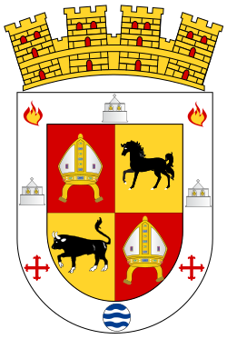
Coamo es un municipio de la región sur de Puerto Rico, reconocido por su patrimonio histórico, sus recursos naturales y sus comunidades.
Promover una administración municipal transparente, eficiente y cercana a los ciudadanos, fortaleciendo la participación de las comunidades.
Apoyar a comerciantes, pequeños y medianos negocios, agricultores y emprendedores, fomentando oportunidades de empleo y desarrollo económico local.
Promover responsablemente los atractivos históricos, culturales, naturales y recreativos de Coamo como parte del desarrollo turístico y económico del municipio.
Promover programas de prevención, bienestar comunitario y apoyo a las familias, personas mayores y poblaciones vulnerables.
Apoyar iniciativas educativas, capacitación tecnológica, formación laboral y oportunidades de desarrollo para los jóvenes.
Priorizar el mantenimiento de carreteras, caminos municipales, instalaciones públicas y servicios esenciales para las comunidades.
Fomentar la conservación de los recursos naturales, áreas verdes y ecosistemas, junto con el manejo responsable de desperdicios y proyectos de sostenibilidad.
Fortalecer los espacios de participación ciudadana para que los residentes puedan aportar ideas y participar en la planificación del desarrollo municipal.
Desarrollar propuestas municipales orientadas al bienestar de las comunidades de Coamo y a su integración dentro de una visión de desarrollo sostenible para Puerto Rico.
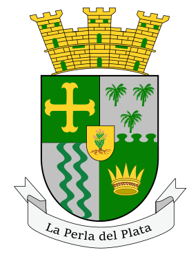
Comerío es un municipio de la región central de Puerto Rico, caracterizado por su entorno montañoso, sus recursos naturales, su patrimonio cultural y el valor de sus comunidades.
Promover una administración municipal transparente, eficiente y cercana a los ciudadanos, fortaleciendo la participación de las comunidades en los asuntos municipales.
Apoyar a comerciantes, pequeños y medianos negocios, agricultores y emprendedores, fomentando nuevas oportunidades económicas y empleos para los residentes.
Promover responsablemente los atractivos naturales, culturales e históricos de Comerío, fomentando actividades que contribuyan al desarrollo turístico y económico local.
Apoyar iniciativas agrícolas y proyectos de producción local que fortalezcan a los agricultores y contribuyan a la economía de las comunidades.
Promover programas de prevención, bienestar comunitario y apoyo a las familias, personas mayores y poblaciones vulnerables.
Apoyar iniciativas educativas, capacitación tecnológica, formación laboral y oportunidades de desarrollo para los jóvenes.
Priorizar el mantenimiento de carreteras, caminos municipales, instalaciones públicas y servicios esenciales para las comunidades.
Fomentar la conservación de los recursos naturales, áreas verdes y ecosistemas, junto con el manejo responsable de desperdicios y proyectos de sostenibilidad.
Fortalecer los espacios de participación ciudadana para que los residentes puedan aportar ideas y participar en la planificación del desarrollo municipal.
Desarrollar propuestas municipales orientadas al bienestar de las comunidades de Comerío y a su integración dentro de una visión de desarrollo sostenible para Puerto Rico.
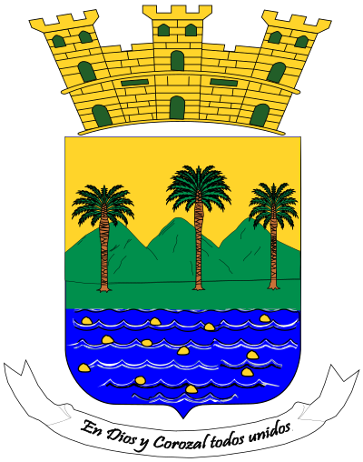
Corozal es un municipio de la región central-norte de Puerto Rico, reconocido por sus paisajes montañosos, sus comunidades y su patrimonio cultural.
Promover una administración municipal transparente, eficiente y cercana a los ciudadanos, fortaleciendo la participación de las comunidades en los asuntos municipales.
Apoyar a comerciantes, pequeños y medianos negocios, agricultores y emprendedores, fomentando oportunidades de empleo y desarrollo económico local.
Promover responsablemente los atractivos naturales, culturales e históricos de Corozal como parte del desarrollo turístico y económico del municipio.
Apoyar iniciativas agrícolas y proyectos de producción local que fortalezcan a los agricultores y contribuyan al crecimiento de las comunidades.
Promover programas de prevención, bienestar comunitario y apoyo a las familias, personas mayores y poblaciones vulnerables.
Apoyar iniciativas educativas, capacitación tecnológica, formación laboral y oportunidades de desarrollo para los jóvenes.
Priorizar el mantenimiento de carreteras, caminos municipales, instalaciones públicas y servicios esenciales para las comunidades.
Fomentar la conservación de los recursos naturales, áreas verdes y ecosistemas, junto con el manejo responsable de desperdicios y proyectos de sostenibilidad.
Fortalecer los espacios de participación ciudadana para que los residentes puedan aportar ideas y participar en la planificación del desarrollo municipal.
Desarrollar propuestas municipales orientadas al bienestar de las comunidades de Corozal y a su integración dentro de una visión de desarrollo sostenible para Puerto Rico.